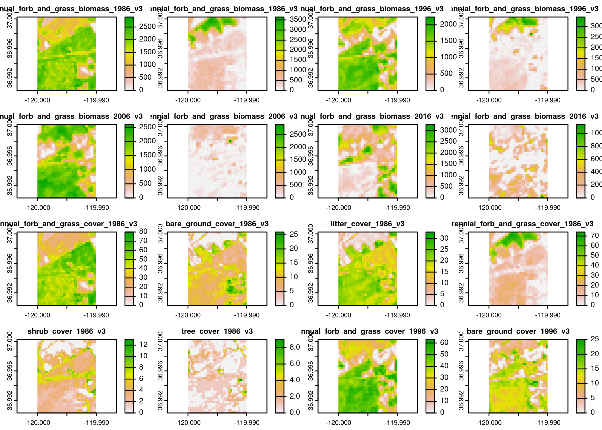

The goal of {rapr} is to provide a simple R interface to Rangeland
Analysis Platform (RAP) Vegetation Biomass and Cover Products. See https://rangelands.app/products and
citation("rapr") for more information on these
products.
You can query annual biomass and cover (versions 2 and 3) for the years 1986 to present.
product = "vegetation-biomass" returns two layers
for each yar:
"annual forb and grass",
"perennial forb and grass" (in lbs / acre).product = "vegetation-cover" returns six layers for
each year:
"annual forb and grass", "bare ground",
"litter", "perennial forb and grass",
"shrub", "tree" (% cover)You can install the development version of rapr from GitHub with:
# install.packages("remotes")
remotes::install_github("brownag/rapr")This example shows how to use a terra SpatVector containing
a rectangular polygon with rapr::get_rap() to obtain RAP
grids for the corresponding extent.
terra, raster, sf and sp objects are all
supported input types. Any spatial object used should have its
Coordinate Reference System defined, as the input coordinates will be
projected to the source data Coordinate Reference System of the RAP
grids (WGS84 decimal degrees / "EPSG:4326").
library(rapr)
library(terra)
#> terra 1.5.21
res <- get_rap(
vect("POLYGON ((-120 36.99, -119.99 36.99, -119.99 37, -120 37, -120 36.99))",
crs = "EPSG:4326"),
version = "v3",
year = 2020:2021,
progress = FALSE
)
res
#> class : SpatRaster
#> dimensions : 37, 37, 16 (nrow, ncol, nlyr)
#> resolution : 0.0002694946, 0.0002694946 (x, y)
#> extent : -120, -119.99, 36.99029, 37.00026 (xmin, xmax, ymin, ymax)
#> coord. ref. : lon/lat WGS 84 (EPSG:4326)
#> sources : 2020vegetation-biomassv3_1e8b71c2ba6a2.tif (2 layers)
#> 2021vegetation-biomassv3_1e8b73af3a8f8.tif (2 layers)
#> 2020vegetation-coverv3_1e8b76bdbb5dc.tif (6 layers)
#> ... and 1 more source(s)
#> names : annua~20_v3, peren~20_v3, annua~21_v3, peren~21_v3, annua~20_v3, bare_~20_v3, ...
plot(res)
When a filename argument is not specified, unique
temporary files will be generated. The resulting SpatRaster object will
retain reference to these files, and you can remove them manually with
unlink(terra::sources(<SpatRaster)).
When a filename is specified, temporary files
will be removed after the result (often a multi- year/layer/product)
SpatRaster is written to new file.
In lieu of a spatial object from {terra}, {raster}, {sf} or {sp}
packages you may specify a bounding box using a numeric vector
containing xmin, ymax, xmax,
ymin in WGS84 longitude/latitude decimal degrees
(corresponding to order used in gdal_translate
-projwin option).
e.g. get_rap(x = c(-120, 37, -119.99, 36.99), ...).
(1: xmin, 2: ymax)--------------------------|
| |
| TARGET EXTENT |
| x = c(xmin, ymax, xmax, ymin) |
| |
|---------------------------(3: xmax, 4: ymin)#>
#> To cite rapr in publications use:
#>
#> Andrew Brown (2022). rapr: Interface to Rangeland Analysis Platform
#> (RAP) Vegetation Biomass and Cover Products. R package version 0.1.0.
#> http://github.com/brownag/rapr
#>
#> Jones, M.O., N.P. Robinson, D.E. Naugle, J.D. Maestas, M.C. Reeves,
#> R.W. Lankston, and B.W. Allred. 2021. Annual and 16-Day Rangeland
#> Production Estimates for the Western United States. Rangeland Ecology
#> & Management 77:112-117. http://dx.doi.org/10.1016/j.rama.2021.04.003
#>
#> Robinson, N. P., M. O. Jones, A. Moreno, T. A. Erickson, D. E.
#> Naugle, and B. W. Allred. 2019. Rangeland productivity partitioned to
#> sub-pixel plant functional types. Remote Sensing 11:1427.
#> http://dx.doi.org/10.3390/rs11121427
#>
#> Allred, B. W., B. T. Bestelmeyer, C. S. Boyd, C. Brown, K. W. Davies,
#> L. M. Ellsworth, T. A. Erickson, S. D. Fuhlendorf, T. V. Griffiths,
#> V. Jansen, M. O. Jones, J. Karl, J. D. Maestas, J. J. Maynard, S. E.
#> McCord, D. E. Naugle, H. D. Starns, D. Twidwell, and D. R. Uden.
#> 2021. Improving Landsat predictions of rangeland fractional cover
#> with multitask learning and uncertainty. Methods in Ecology and
#> Evolution. http://dx.doi.org/10.1111/2041-210x.13564
#>
#> To see these entries in BibTeX format, use 'print(<citation>,
#> bibtex=TRUE)', 'toBibtex(.)', or set
#> 'options(citation.bibtex.max=999)'.